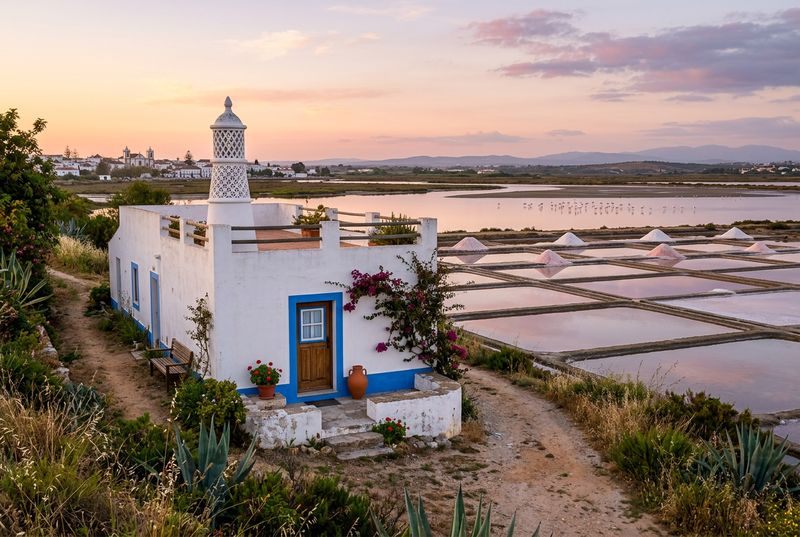

Your stay at The Salt House, Tavira
Thursday 19 to Tuesday 24 November 2026 · 5 nights · 2 adults · simulated booking AI picture
Booking CC-0419paid (pretend) on 18 Nov
day 3 of 6
day 3 of 6
Real weather: IPMA, Faro (nearest IPMA place, about 28 km), as issued 18 Nov 2026 15:31 · events: Tavira and Faro agendasMove the simulated day on the slider in Side by side, or tap a day here.
Saturday 21 November Real forecast
11.2 to 20.1 °C
Showers (IPMA type 6), rain likely: 75%, wind from the south-west, moderate.
Showers (IPMA type 6), rain likely: 75%, wind from the south-west, moderate.
Rain chance75%
Sea, Faro coastno data
WindSW, moderate
IPMA, Instituto Português do Mar e da Atmosfera · ipma-city-forecasts, Faro 1080500 · issued 18 Nov 15:31 local · read via data.promptugal.news 18 Nov 16:30 UTC · source card. IPMA's sea forecast covers three days, so 21 Nov has none.
Earlier this stay: yellow warning, rough sea, west coast (waves 4 to 5 m), 18 Nov 13:15 to 20 Nov 09:00. IPMA ipma-warnings, area FAR. Over before today.
On nearby today Real events
Visita orientada ao Lagar de Azeite da Cooperativa Agrícola de Santa Catarina
In planSanta Catarina da Fonte do Bispo · Tavira agenda
Tavira Convid'a Pedalar
In planPartida: Praça da República · Tavira agenda
Passeios na História de Tavira | "Pão, Vinho e Azeite: a Dieta Mediterrânica na arte sacra de Tavira"
Vários sítios da cidade · Tavira agenda
Música nas Igrejas | Duo Fortíssimo (guitarra)
In planErmida de Santa Ana · Tavira agenda
O Mundo Inteiro à Espera
Teatro das Figuras, Faro (about 28 km) · Faro agenda
Titles as the agendas publish them. events/by-place/tavira.json (39 events) and faro.json (10), read 18 Nov 16:32 UTC. Check times with the organiser. 2 more not shown.
My plan for Saturday your plan, kept in this browser
Breakfast on the roof terraceyou wrote this
Olive press visit, Santa Catarinareal event
20 min by car (estimate, invented)Grilled-fish lunch near the old bridgeinvented suggestion
not a real restaurant; ask locallyTavira Convid'a Pedalar (bike ride)real event
Rain 75% this afternoon (IPMA). See the agent's note.Música nas Igrejas, Ermida de Santa Anareal event
>_Chaminé, the site's agent simulated, scripted
IPMA gives 75% rain for Saturday and 2% for Sunday. Swap the bike ride for the walk through the old town at 15:30 (indoors at the end), and keep the island beach for Sunday?
ASK · site.A4the agent changes your plan only when you say so
Events (real)BeachesFoodAgent's ideasWrite your own
Passeios na História de Tavira, 15:30 real event
Island beach across the lagoon (Ilha de Tavira, a real place; the suggestion is ours, check the ferry) invented suggestion
Market morning: oranges, almonds, figs invented suggestion